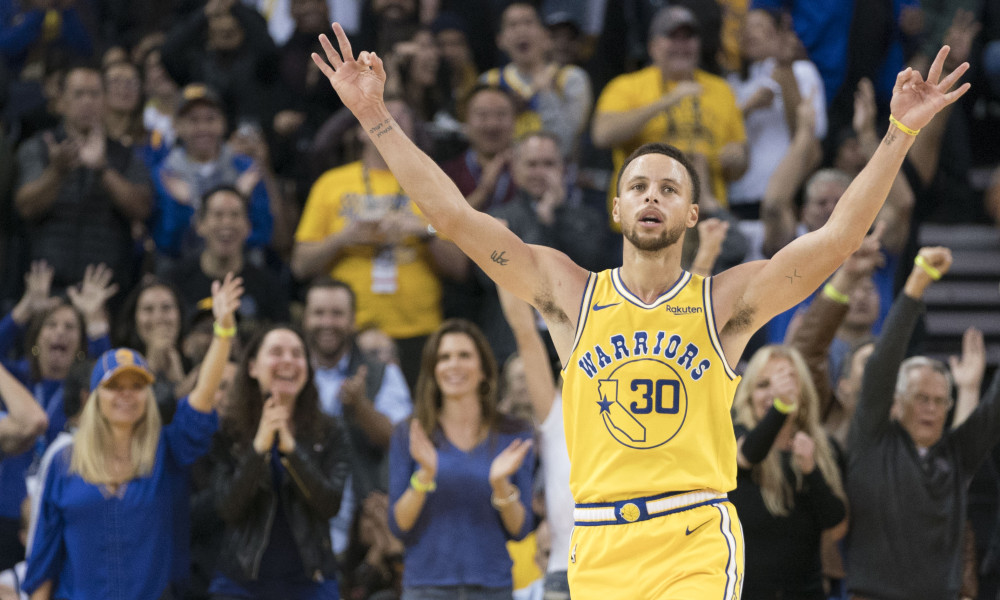

Game 1: Chicago Bulls vs Charlotte Hornets
My Pick:
Charlotte Hornets
Why I'm Rolling with them:
The Bulls picked up their first win against Charlotte, off of another brilliant Zach LaVine performance which saw him put up 32, 5, and 4. He's been incredibly hot to start the season, and I can see him putting forwards a bid for an all-star spot depending on how the season goes. But, I still think Charlotte is the stronger team with Walker leading the charge. He's been having a great season in his own right, and this game is at home for Charlotte, giving them the edge. Charlotte 109-104
Game 2: Golden State Warriors vs New York Knicks
My Pick:
Golden State Warriors
Why I'm Rolling with them:
This one should be obvious, but in case it's not: Golden State is still the team to beat, even without Boogie. Steph Curry is coming off a 51 point game, where KD also put up 30, 8, and 7. Klay has been struggling lately, but that isnt enough to lift this Knicks team over the Warriors. I'm expecting Hardaway to have a goog game, but beyond that I'm not expecting much. Warriors 115-97
 Curry Hits a 3 over Jeff GreenGame 3: Dallas Mavericks vs Toronto Raptors
My Pick:
Toronto Raptors
Why I'm Rolling with them:
Both Doncic and DSJ have impressed lately, and if Barnes is back he'll be a welcome addition to this 2-2 Mavericks team. However, Toronto's perimeter defense has been suffocating lately, and having Leonard, Green, and Lowry will be a real test for the young guards. VanVleet is only probable for tonight's game, so if he is out Toronto will have to rely on someone else for their bench playmaking. With Siakam in the starting line-up, look to see Powell get the lion's share of the second unit ball handling. Toronto's bench depth will be reduced greatly with Wright and Anunoby out. Still, I see Toronto taking this one 112-103
Game 4: Los Angeles Clippers vs Houston Rockets
My Pick:
Los Angeles Clippers
Why I'm Rolling with them:
This is the pick I am the least sure about, but having Harden out is a severe handicap for the Rockets, who have had a rough start to the season. I am not sold on Melo having a positive impact for this Rockets team, and having him start alongside Eric Gordon, normally the Rockets 6th man, doesn't bode well. I don't see a high scoring game, but the Clippers edge out the rockets, 105-99
Game 5: Milwaukee Bucks vs Minnesota Timberwolves
My Pick:
Milwaukee Bucks
Why I'm Rolling with them:
Giannis has been on an absolute tear to start the year, making an early bid for MVP. Middleton and Bledsoe have been excellent complimentary pieces, putting up good numbers on better efficiency. Conversely, Minnesota has struggled early, with Butler and Towns having sub-par seasons to this point. The one shining exception has been the play of Derrick Rose, who is putting up 15 pts, 3.6 reb 5 ast and looks to have some of his athleticism back. That won't be enough to launch the Wolves over the Bucks. 122 - 110
Game 6: New Orleans Pelicans vs Brooklyn Nets
My Pick:
New Orleans Pelicans
Why I'm Rolling with them:
The Pelicans, 0-5 in the preseason, are the 1 seed in the West. Mirotic has been playing out of his mind, putting up incredibly impressive numbers. AD needs no justification. I'm high on the Elfrid Payton experiment that's going on, and Holiday is consistently one of my favourite players. The Nets have been playing good basketball, 2-2 to start the season with wins coming against 2 teams I see making the playoffs (Yes, the Pistons are tentatively in after a strong start. Yes, I am 100% going to regret this pick mid-october when Blake Griffin putting up 34 points a game on 65% 3pt shooting no longer is happening). However, Jarrett Allen and Caris LeVert won't be enough to slow down this high-octane Pelicans Team. 125-112
Game 7: Washington Wizards vs Sacramento Kings
My Pick:
Washington Wizards
Why I'm Rolling with them:
The Wizards have one of the top backcourts in the league, and a new and improved bench. That hasn't stopped them from crawling to a 1-3 start, including losses against 2 teams on the second night of back to backs. That said, the Kings are worse, leaking points at every turn. I'm anticipating a high scoring game, with a great point guard battle between Wall and Fox, (who has had a very good start to his sophmore season). Wizards take it, 119-113